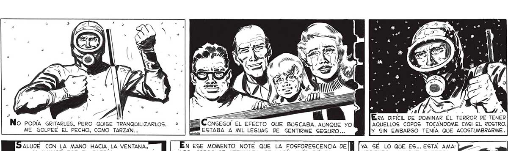
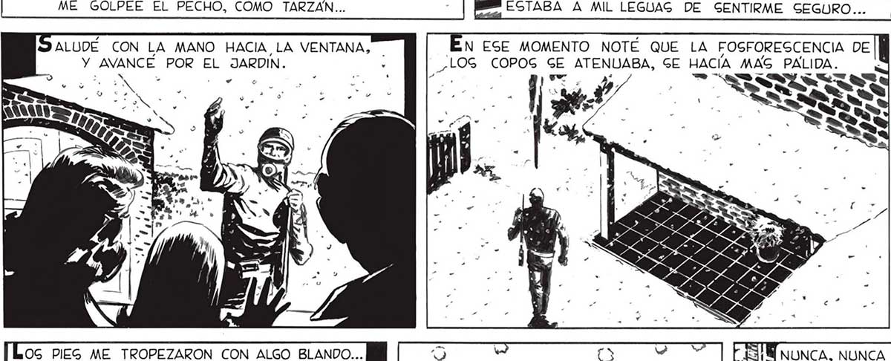
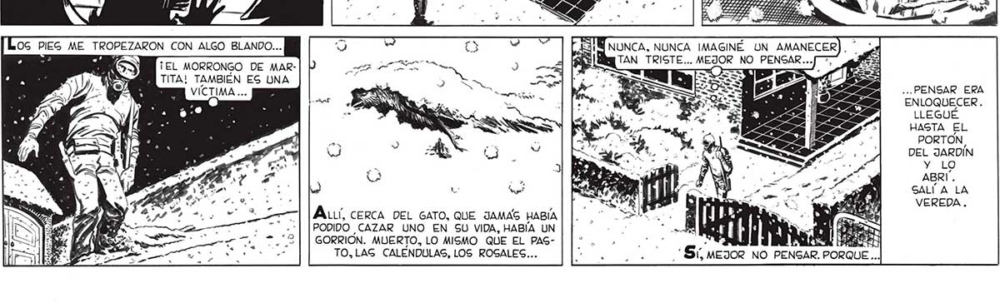

Era DIFÍCIL DE DOMINAR EL TERROR DE TENER AQUELLOS COPOS TOCANDOME CASI EL ROGTRO. No PODÍA GRITARLES, PERO QUISE TRANQUILIZARLOS. ME GOLPEE EL PECHO, COMO TARZAN... ALUDE CON LA MANO HACIA LA VENTANA, | N EGE MOMENTO NOTÉ QUE LA FOSFORESCENCIA DEl] Y AVANCE POR EL JARDIN. , ¿LOG COPOG GE ATENUABA, GE HACIA MAS PALIDA. > 5 | a. ta? Bo ' po, y/ e TRY . e . 0 AS é. ISS XLS o ' DO” => r NECIENDO... AUNQUE PAREZCA MENTIRA, LA TIERRA HA SEGUIpl A : UN TEL MORRONGO DE MARTITA! TAMBIÉN ES UNA VICTIMA ... Lal . a: OS PIEG ME TROPEZARON CON ALGO BLANDO... | 5 Y NUNCA, NUNCA IMAGINÉ UN AMANECER a SN TAN TRISTE... MEJOR NO PENSAR. AOS PODIDO CAZAR UNO EN SU VIDA, HABÍA UN | | E sl E VD ad GORRIÓN. MUERTO, LO MISMO QUE EL PAS- o e TO,LAG CALENDULAS, LOS ROSALES... SP y y 2 S: MEJOR NO PENGAR. PORQUE .. 'YA GÉ LO QUE ES... ESTA AMA-| Y SIN EMBARGO TENÍA QUE ACOSTUMBRARME . ... PENSAR ERA ENLOQUECER . LLEGUÉ HASTA EL PORTON, DEL JARDÍN Y LO ABRÍ. SALÍ A LA VEREDA. 43


